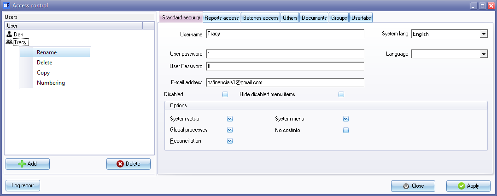

Access control - Standard security tab
The Standard security tab in the Access control feature of osFinancials serves as the primary tool for managing user access and permissions. Here are the key features of the Standard security tab:
- User management: The Standard security tab allows you to create users and set or change their passwords and email addresses. You can also disable or delete user accounts as needed.
- Access to main functions: In the Standard security tab, you can define user access to important functions such as System setup, System menu, Global processes, and Bank reconciliation. By allowing or restricting access to these functions, you can control what users can do within the system.
- Display of menu options: When you restrict a user's access to specific functions, all menu items are displayed by default. However, the menu options to which the user has no access will be displayed as inactive or greyed out. If desired, you can choose to hide these inactive menu options, ensuring that users only see and interact with the functions they are allowed to access.
By utilizing the Standard security tab, you can create a secure environment and tailor user access to specific functions within osFinancials. This helps maintain control over system configuration, global processes, and critical financial functions while ensuring that users only see and access the relevant features based on their assigned permissions.
To set standard security options for an user:
- On the Setup ribbon, click on Setup → Access control.

- System lang - The default language set for the Set of Books will be displayed in this field. You may set another language for the Set of Books. The selected language will be displayed every time the Set of Books is opened.
- Language - The languages added in the Languages tab in Groups (Setup ribbon) may be selected for the Multi-Language accounts plugin.
|
|
Multi-Language accounts - Manual - Shop - Licence : Once-off - This plugin makes it possible to translate the ledger and group names in multiple languages. It is already possible to choose different languages for the interface (the buttons). But this plugin makes it possible to do the accounting in different languages. Per user you can select a language, so the user can account in his/her own language. The set of books can be viewed in different languages, therefore it is possible an employee enters information into an English Set of Books and a bookkeeper, auditor, etc. can see the set of books in a set language, e.g. Afrikaans, Dutch, etc. |

- Select an user in the "User" field or area of the screen.
|
|
Do not select the Default user with all rights (Universal administrator). The Universal administrator (Default user) user should not have any restrictions. |

- By default, all options are selected (ticked), except the "Disabled" and "Hide disabled" options.
|
|
If an user is set to disabled, (Disabled field ticked), and the disabled user tries to log in, an error message will be displayed. "Access control" |

- The options to set the access levels is as follows:
- System setup -
- Start ribbon - Disables the following:
- Create Set of Books (Creation wizard).
- Save as.
- Delete Set of Books.
- Setup ribbon - Disables all features, except the following:
- Calculator - Can access the calculator.
- Import - Import accounts, debtors, creditors, documents and stock from specific file formats.
- Export - Export accounts, debtors, creditors, documents, stock and posted batches to specific file formats.
- Global processes -
- Import - Disables import of accounts, debtors, creditors, documents and stock from specific file formats.
- Export - Disables export accounts, debtors, creditors, documents, stock and posted batches to specific file formats.
- Setup ribbon - Disables the following seven (7) options:
- Global processes - The following four (4) options are available:
- Clear / Reset - This option allows you to clear all the transactions and balances in a Set of Books.
- Do year end - This option allows you to close off all the nominal accounts (income and expense accounts) and transfer the balances for the financial year to the Retained income / earnings account. The start date and the reporting dates for the financial year will also be created for the new financial year.
- Copy from a Set of Books - This option allows you to copy the data from a selected Set of Books into the active (open) Set of Books. This will replace all the data in the active Set of Books.
- Reverse posted batch / document - This feature allows you to reverse or cancel the transactions in posted documents and batches.
- Tools - Disables the following options:
- Data integrity check - Run a Data integrity check and print a Data integrity check report.
- Customise language - Customise (edit, change and translate) language files.
- Close active forms - Close any open forms (e.g. Documents, Debtors, Creditors, Stock items screens, etc.)
- Activate plugins - By default, no plugins is activated when osFinancials 5 is installed. This option allows you to activate / deactivate all plugins, registered plugins or specific plugins. The activated plugins will be available from the Plugins menu.
- Plugins - By default, no plugins are listed on this menu. Only activated plugins will be listed.
- Others - Not used.
- Reconciliation - Disables the bank reconciliation feature.
- System menu -
- This will disable the (Start ribbon).
- Delete Set of Books option.
- Online registration - Register the osFinancials program.
- Help menu - Disable the following seven (7) options:
- Help - Launch the osFinancials Help system where you may locate topics.
- Support - View contact information of osFinancials5 or go to the Support page via the Internet.
- Show Welcome - By default, the Welcome to osFinancials5 screen displays the website. If the Welcome to osFinancials5 screen is not displayed, it will launch the Welcome to osFinancials5 screen.
- Updates -
- Forum - Please visit our Forum to find solutions or to post comments, etc.
- Webshop - Please visit our webshop.
- Bug report - View, search and report any bugs on our bug-tracking system.
- This will disable the following on the Default ribbon:
- Update ledger (F3) – Disables Update ledger (F3) posting of batches and documents.
- Edit menu - Disable the following three (3) options:
- Repeating transactions - Enter / edit transactions in batches of a recurring nature.
- Repeating invoices - Generate and process invoices of an recurring nature.
- Delete - Delete sales documents (i.e. invoices, credit notes and quotes) and purchase documents (i.e. purchases, supplier returns and orders).
- Input - Disable the following six (6) options:
- Adjust stock - Access the Edit Stock screen.
- Confirm - Confirm and convert quotes to invoices and orders to purchases.
- Backorders - Add, edit and delete back orders for stock items.
- Sales documents - Process / edit invoices, credit notes and quotes.
- Purchase documents - Process / edit purchases, supplier returns and orders.
- POS Invoice - Run and manage a point-of-sales shift and process point-of-sale invoices.
- Select to allow or restrict a user to System Setup, Delete Set of Books on the Start ribbon and Global processes (Clear / Reset, Do year end, Reverse posted batches / documents) on the Tools ribbon. (You may press the Spacebar on your keyboard to select or deselect an option).
- Applying changes: Click on the Apply button to save the changes for the selected user.
- Setting access levels for other users: If necessary, select the next available user and configure their access and restrictions in the same manner.
- Finalizing changes: Once you have finished setting the access levels for all desired users, click on the Close button to exit the "Access control" screen.
|
|
You may select the specific options for which you wish to restrict that user by removing the tick for the specific option the user may not access. You may move down the options with the Down Arrow or Up Arrow keys and toggle between a tick and a blank in the tick box fields with the Spacebar on your keyboard, or select it with the mouse and click on the box you want to select or deselect. |

|
|
It is recommended that at least one User (Default user or System administrator) should have no restrictions on the System setup. |
|
|
If you disable some menu or access options for a user, you may select to hide disabled menu items, If this option is not selected, any disabled menu items, (e.g. system setup, global processes, reconciliation, reports, edit accounts, etc.) will be displayed as an inactive option (greyed out). |
|
|
User icons are displayed as follows: - indicates that all functions are allowed to that user. - some functions or security options are restricted or disabled. |